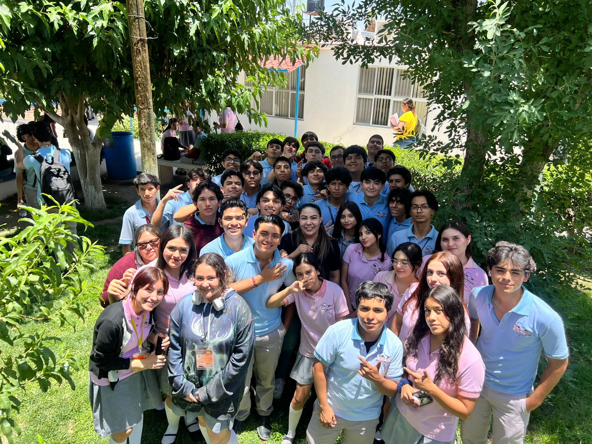

Comunidades
Virtuales.
Aprende cómo funcionan las plataformas digitales, redes sociales y comunicación en línea. Descubre herramientas utilizadas para crear, administrar y mejorar comunidades digitales modernas e interactivas.

Redes Sociales
Aprende a utilizar las redes sociales de forma estratégica para comunicar ideas, conectar con audiencias y fortalecer tu presencia digital. Conocerás conceptos de creación de contenido, interacción con usuarios, tendencias digitales y buenas prácticas para diferentes plataformas.

Comunicación Online
Comunicación Online Descubre cómo utilizar plataformas digitales para comunicarte, colaborar y compartir información de manera efectiva. Aprenderás sobre herramientas de videoconferencia, mensajería, trabajo colaborativo y espacios virtuales utilizados en entornos educativos, profesionales y sociales.